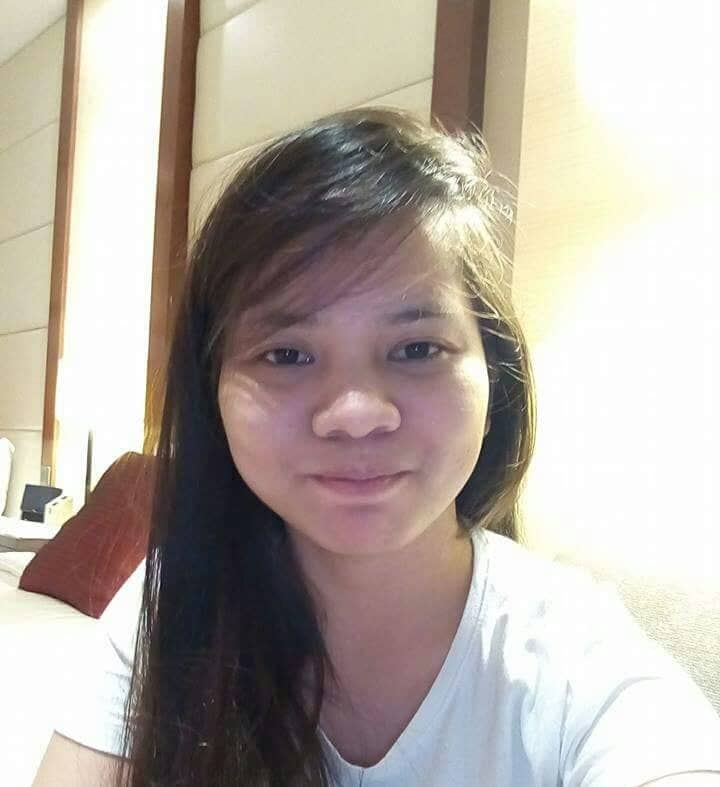

I have a broken Family, at first it is dificult for me to accept. But when I grow up I realize that God has a reason, why he give me a life like this. And now I am one of the student of STI Ortigas-Cainta, studying Bachelor of Science in Information Technology. My hobbies are watching Youtube,reading books and cooking. My favorate sport is Badminton.